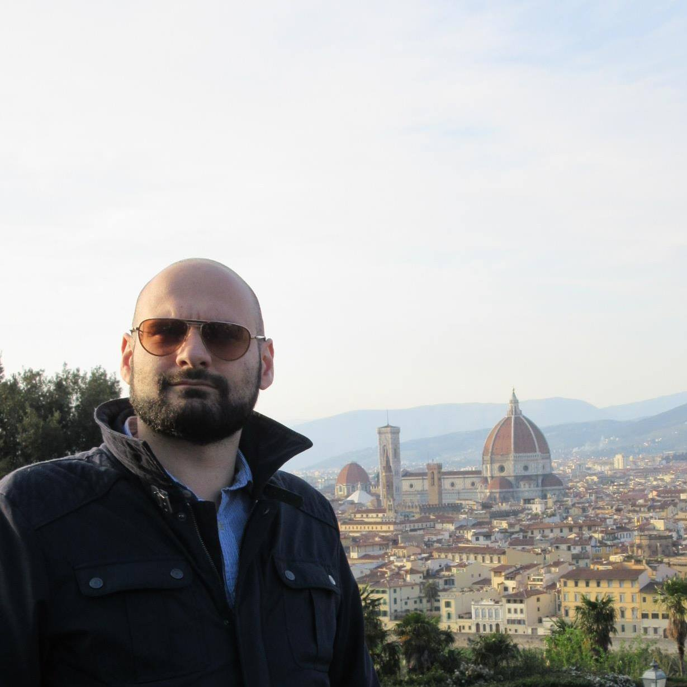

About me

I obtained in 2020 a Ph.D. degree in computer science at University of Le Havre Normandy (LITIS laboratory, RI2C team). My accademic interests span complexity theory, spatial complex networks, model and simulation.
Contacts
e-mail tirico.michele@univ-lehavre.fr
For any questions, feel free to contact me via e-mail.
University of Le Havre Normandy
25 rue Philippe Lebon, Le Havre, France, room G010
Public school of engineers post-bac, ISEL
1137 Quai Frissard, Le Havre, France, room 427
Accademic positions and experieces
Teaching
2018-2020 Researcher and theaching assistant (ATER) at
ISEL.
Research
2015-2016 Assistant in research laboratory
UMR 7300 ESPACE
2015 Erasmus+ traineeship at
UMR 7300 ESPACE
Publications
-
Tirico M., Balev S., Dutot A., Olivier D. (2018) Morphogenesis of Complex Networks: A Reaction Diffusion Framework for Spatial Graphs, in: Complex Networks and Their Applications VII. COMPLEX NETWORKS 2018. Studies in Computational Intelligence, vol 812, pp 769-781, Springer Cham, link.
-
Tirico M., Balev S., Dutot A., Olivier D. (2017) Turing’s Theory of Morphogenesis Applied to Street Layout, First Approach, in WANCSA, 2nd Workshop on Advance in Nonlinear Complex Systems and Application.
-
Fusco G., Tirico M. (2016) Configurational Approaches to Urban Form: Empirical Test on the City of Nice (France), in: INPUT 2016: The 9th International Conference on Innovation in Urban and Regional Planning, pp. 376-382, link.
Teaching
Researcher and theaching assistant (ATER)
Higher Institute of Logistic Studies, public school of engineers post-bac (ISEL), 2018-2020
Role: lecturer and tutor. Helped write assignments and exams.
Topics: programmation and Python language, webpage design, office, mail, deontology, web security.
Education
Ph.D. in computer science
University of Le Havre Normandy, Litis laboratory, France, 11/2020
Title Morphogenesis of complex networks. An application in urban growth.
dissertation
Keywords complex networks, complex systems, morphogenesis, spatial networks, reaction-diffusion systems, urban growth models, graph generator, fractal theory.
Advisor Damien Olivier, Full professor in computer science, University of Le Havre Normandy
Abstract The characteristics, functions and morphogenetic processes of a large number of complex spatial networks are influenced by the position and the geometry of their constituent elements. In this work, we address the computational aspects of the morphogenesis of complex networks by proposing a general model, simulating their formation. The networks are generated under the influence of constraints expressed through a vector field that is determined using a reaction-diffusion system. We use the Gray-Scott model to produce a wide variety of dynamic patterns. The resulting vector field controls the geometry and the growth rate of the constructed network that feeds back the reaction-diffusion process. A study was carried out on the influence of the patterns and feedback processes on the structure of the obtained networks using measures from graph theory and multi-fractality theory. A process of validation and evaluation of the model's behaviour was carried out and applied by comparing the networks obtained to largest French cities and the most relevant geometric planar graphs.
Msc in Geography
University of Côte d'Azur, Nice, France, 07/2016
Master Geoprospective, Planning and Sustainability: Spatial Structures and Dynamics (
Geoprad Sds),
UMR 7300 ESPACE
Title Discriminer des morphologies urbaines : Application des approches configurationnelles à l’agglomération de Nice: University of Côte d'Azur
memoire
Advisor Giovanni Fusco, Full professor in Geography, CNRS Senior Research Fellow
Keywords Urban morphology, spatial analysis, street network analysis, configurational analysis, space syntax.
Msc in Architecture and Construction Engineering
University of Pisa, Italy, 12/2015
Keywords Architectural design, material and construction technology, graphic computer science,urban planning, urban analysis.